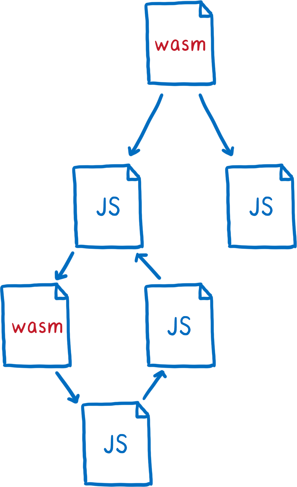

The future of JavaScript bundlers.
Photo by azhrjl on UnsplashAbout me

Do we even need JavaScript bundlers?
There is a build step.
- Might be slow
- Adds additional complexity
You have to configure it.
- For special dialects like JSX or CSS modules
- #0CJS is a good start...
- ...but every reasonable-sized app will eventually require custom configuration
Additional indirection.
- The code you write is not the code that is executed
- Configuring source maps can be error prone
- Source maps are slow to generate
You suddenly have to deal with problems you didn't have before.
Native ES modules support in browsers
Why isn't everyone just using ES modules?

No bare module specifiers.
No optional extensions.
No package.json resolving.
Since URL lookups are expensive, the browser can't just try out a bunch of possibilities like Node.js does.
Will we still need JavaScript bundlers in the future?
The purpose of JavaScript bundlers.
They enable JavaScript modules in all browsers.
HTML, CSS and WebAssembly modules.
They allow us to use custom languages.
- JSX
- Vue Single-File Components
- TypeScript
Short feedback loop.
- Fast rebuilds in watch mode
- Hot module replacement
They unify module systems.
Like ESM, CJS, even WASM and mabe even still AMD.
They take care of...
- ...wiring all imports and exports together
- ...initializing the module graph
You don't need to worry about what module system your dependencies are using.
They unify the underlying platform.
Historically, we tried to simulate a CJS environment with Node.js core modules.
They compile down new language features.
Via build tools like Babel and PostCSS.
They create efficient chunks.
- By resolving module ids on build time
- By merging modules that depend on each other into a single file.
They allow us to do effective long-term caching.
By calculating asset hashes and automatically updating all URLs.
They add resource hints for the browser.
They reduce asset file sizes.
By removing...
- unused code (a.k.a. tree-shaking and dead code elimination)
- redundant characters (minification)
- unnecessary bytes (compression)
Well...
...they don't actually do the latter, but they orchestrate other tools which do that.
The future of JavaScript bundlers.
JS modules.
We don't need JS bundlers for that, it's already possible with ESM.
But: our current problem is resolving.
Things we can do: not rely on "cute" (Ryan Dahl) resolving features.
- Use file extensions
-
Use the
.mjsextension for JavaScript modules once ESMs land in Node.js -
Avoid
index.js - Avoid module aliases just for ergonomic reasons
But do we really have to give up bare module specifiers (BMS)?
Advantages of BMS:
- Shorter imports for common packages
-
Indirection at package-level which allows the
main/browser switch.
This is important for isomorphic modules
like
isomorphic-fetch. - Hides the actual file layout of third-party modules
There are two ways we could get BMS into the browser:
- A strict and universal standard how to look up BMS (and all packages would need to adhere to it)
- An external resolving config (out-of-band configuration)
You can also define fallbacks:
There are also scopes that allow to map a BMS to different locations depending on the importing module:
But do we have to groom these import maps by hand?
No. It will probably be generated by package managers.
But we will need to tweak it once in a while.
Heads up!
The following proposals are in very early stages. Take them with a grain of salt.
As a replacement for HTML imports:
There is an intent to implement from the MS Edge team.
Built upon the Constructable Stylesheet Objects proposal.
The goal: Turn this imperative API...
...into a declarative API:
Challenge: Allow cyclic dependencies between non-JS modules.
 Source: Lin Clark's presentation about WebAssembly ES module integration.Cyclic dependencies between two WASM modules probably won't work at all.
 Source: Lin Clark's presentation about WebAssembly ES module integration.
Source: Lin Clark's presentation about WebAssembly ES module integration.
Interesting proposals
Advantages of these proposals:
- No out-of-band configuration of loaders. Modules determine how they want to import a dependency.
- Custom language support for NPM modules. Sharing frontend components would become easier.
-
One step closer to
#0CJS(zero config).
One thing to note:
These are proposals to do the resource transformation on run time.
In order to get it fast for production, you would probably want to move this transformation to build time.
Hence, the transformation should be statically analyzable.
This is kind of hard to standardize because bundlers, Node.js and browsers have very different requirements.
But there is an interesting alternative to loaders...
Babel macros is a Babel plugin that allows you to evaluate code on build time.
import is removed.
How can this substitute loaders?
A good example of why modules should be able to control their loaders:
How would that work without Babel?
With a package switch:
Current problem of Babel macros:
They require synchronous I/O. Maybe this could be solved with top-level await?
Short feedback loop
- We do not need a build step at all if we can do the transformations on run time.
- But: we would need a way to make the transformations cacheable.
- For HMR, we would still need a dev server with WebSockets.
Unified module systems.
Authors will slowly adopt the common denominator:
- ESM
- Imports with explicit file extensions
- Using the
.mjsfile extension for ESMs
Bundlers won't be necessary because of compatibility reasons.
🎉🎉🎉
Unified platform.
My hope: Platform independent APIs will converge some day.
Good example: the URL constructor.
Bad example: fetch().
Would alleviate the need for node-libs-browser.
New language features
Will be less relevant with evergreen browsers and incremental language updates.